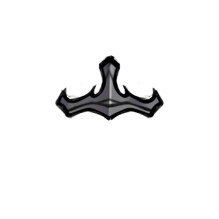
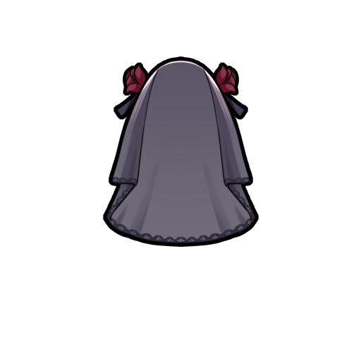
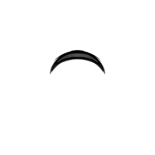
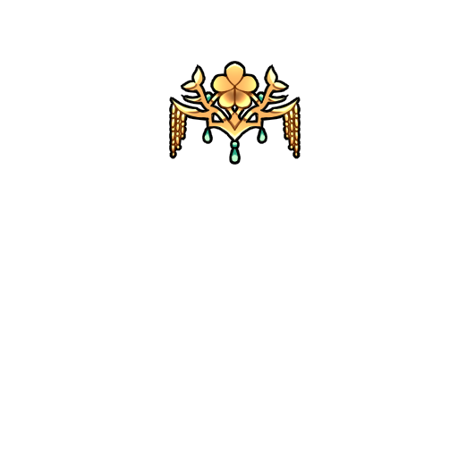
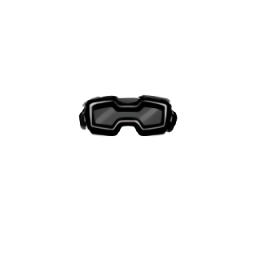
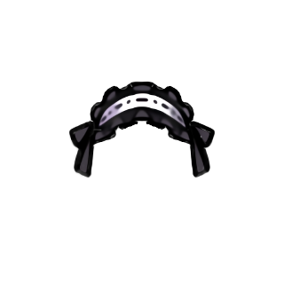
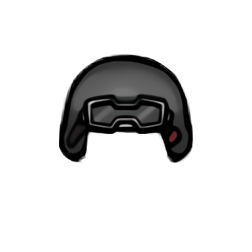
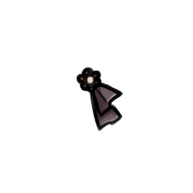
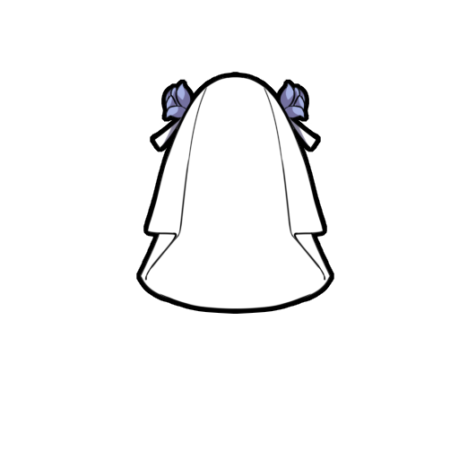
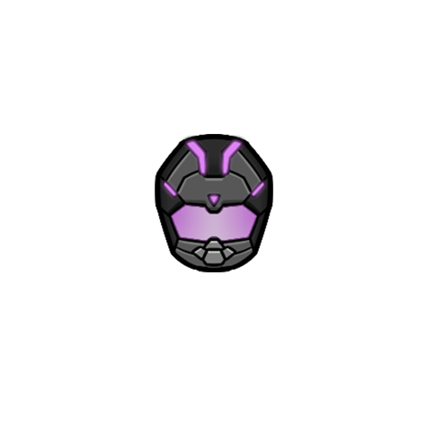

魅狐比基尼头盔Kurin_Overhead_Bikini_Armor_Headgear

Kurin/Apparel/Overhead/Bikini_Armor_Headgear/Texture
—
比基尼盔甲配套的头盔。比看起来要结实得多。
本片：魅狐比基尼头 kurin 魅狐休闲发夹 Kurin 魅狐可爱发卡 魅狐护目镜 魅狐哥特发夹 魅狐军用头盔 魅狐夏季帽子 魅狐传统发卡 kurin 魅狐冬季帽子 “赤狐”头盔
Kurin_Overhead_Bikini_Armor_Headgear
Kurin/Apparel/Overhead/Bikini_Armor_Headgear/Texture
—
比基尼盔甲配套的头盔。比看起来要结实得多。
Kurin_Overhead_Black_Wedding_Headwear
Kurin/Apparel/Overhead/Black_Wedding_Headwear/Black_Wedding_Headwear Single
层 Overhead
（无描述）
Kurin_Overhead_Casual_Hair_Pin
Kurin/Apparel/Overhead/Casual_Hair_Pin/Texture
—
休闲气息的发卡。戴上它就会显得充满活力。
Kurin_Overhead_Chinese_Wedding_Headwear
Kurin/Apparel/Overhead/Chinese_Wedding_Headwear/Chinese_Wedding_Headwear
—
（无描述）
Kurin_Overhead_Cute_Hair_PinKurin/Apparel/Overhead/Cute_Hair_Pin/Texture
—
有着可爱狐狸模样的发夹。
Kurin_Overhead_Goggles
Kurin/Apparel/Overhead/Goggles/Texture
护甲 0.3/0.2/0.1 · 科研 Kurin_ApparelT2
战斗用护目镜。提供了最小限度的防御能力。
Kurin_Overhead_Gothic_Hair_Pin
Kurin/Apparel/Overhead/Gothic_Hair_Pin/Texture
—
哥特式发夹。
Kurin_Overhead_Military_Helmet
Kurin/Apparel/Overhead/Military_Helmet_A/Texture
护甲 0.5/0.3/0.2
内置塑钢防弹板的军用头盔，是保护头部免受子弹伤害的最后一道防线。
Kurin_Overhead_Summer_HatKurin/Apparel/Overhead/Summer_Hat/Texture
—
一款简便的夏季帽子。即使在炎热的夏天，只要是和这顶帽子在一起就能撑得住。
Kurin_Overhead_Traditional_Hair_Pin
Kurin/Apparel/Overhead/Traditional_Hair_Pin/Texture
—
可爱的花型发夹。
Kurin_Overhead_White_Wedding_Headwear
Kurin/Apparel/Overhead/White_Wedding_Headwear/White_Wedding_Headwear
层 Overhead
（无描述）
Kurin_Overhead_Winter_HatKurin/Apparel/Overhead/Winter_Hat/Texture
—
一款简便的冬季帽子。耐寒较弱的魅狐也可以舒舒服服地过冬。
Kurin_Redfox_Helmet
Kurin/Apparel/Overhead/Marine_Melee/Texture
护甲 1.1/0.5/0.5 · 重 1.5
为魅狐赤狐士兵提供的高度防护军用头盔。由于用纳米纤维的编织物为头盔夹层，它能够吸收令人难以置信的伤害。